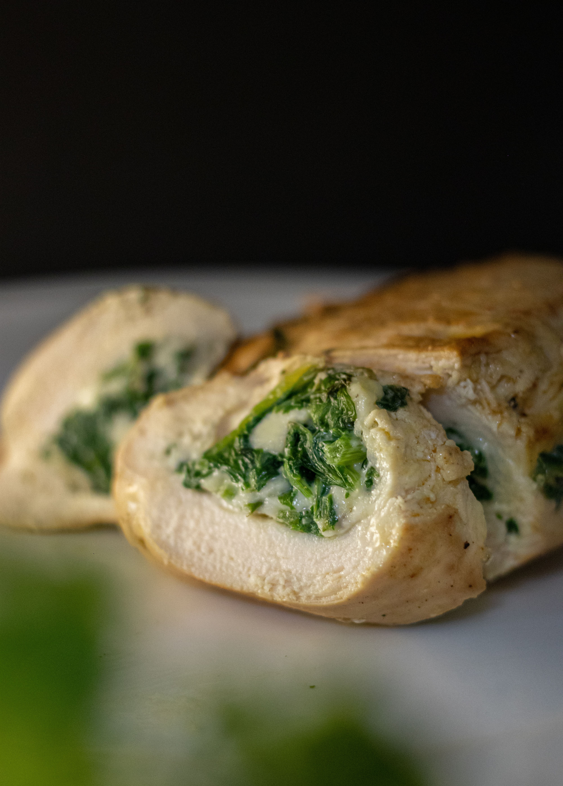

Home
Baked Italian Chicken Rollatini

Baked Italian Chicken Rollatini: Creamy & Cheesy Baked Italian Chicken Rollatini
Ingrediants:
- 4 boneless, skinless chicken breasts
- 1 cup ricotta cheese
- 1 cup shredded mozzarella
- ½ cup grated Parmesan cheese
- 1 cup marinara sauce
- 1 tsp Italian seasoning
- 1 tsp garlic powder
- 2 tbsp chopped fresh parsley
- Salt and black pepper, to taste
- 1 tbsp olive oil
Steps:
- Preheat the oven to 190°C (375°F).
- Slice each chicken breast horizontally and gently pound it until thin and even.
- Season both sides with salt, pepper, garlic powder, and Italian seasoning.
- In a bowl, combine ricotta, ½ cup mozzarella, Parmesan, and parsley.
- Spread the cheese mixture over each chicken breast.
- Roll each piece tightly and secure with toothpicks.
- Spread half of the marinara sauce across the bottom of a baking dish.
- Place the chicken rolls seam-side down in the dish.
- Spoon the remaining marinara over the chicken and sprinkle with the remaining mozzarella.
- Cover with foil and bake for 25 minutes.
- Remove the foil and bake for another 10–15 minutes, until the chicken reaches 74°C (165°F) internally and the cheese is golden and bubbly.
- Let rest for 5 minutes, then garnish with parsley and serve.